Anleitung
Mit dem osVAC neo Baukasten stellst du Adapter für das Absaugsystem osVAC neo selbst zusammen und lädst sie als Datei für deinen 3D-Drucker herunter. Du brauchst dafür kein CAD-Programm: Du wählst aus, gibst ein paar Maße ein und siehst das Ergebnis sofort in der 3D-Vorschau.
Diese Anleitung zeigt Schritt für Schritt, wie das geht, und erklärt alle Einstellungen. Über das Inhaltsverzeichnis springst du direkt zu dem Adapter, den du bauen möchtest.
So ist die App aufgebaut

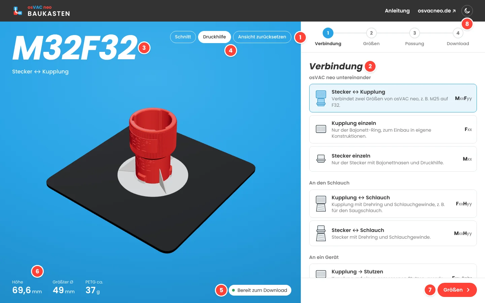
- Die vier Schritte. Jeder Adapter entsteht in vier Schritten: Verbindung (was für ein Adapter), Größen oder Aufbau (die Maße), Passung (wie stramm alles sitzt) und Download. Du kannst jederzeit auf einen Schritt klicken und zurückspringen.
- Einstellungen. Rechts stehen die Einstellungen des gerade gewählten Schritts.
- Name des Adapters. Links oben steht der Name, unter dem die Datei gespeichert wird, z. B. M32F32 für Stecker 32 auf Kupplung 32. Darunter steht die Art des Adapters.
- Ansicht. Schnitt schneidet das Modell in der Mitte auf, so siehst du das Innere. Druckhilfe blendet die kleinen Hilfsteile ein oder aus. Ansicht zurücksetzen dreht das Modell wieder in die Ausgangslage. Mit der Maus drehst du das Modell (linke Taste), verschiebst es (rechte Taste) und zoomst (Mausrad).
- Stand der Berechnung. Hier steht, ob die App gerade rechnet, ob der Adapter fertig ist (Bereit zum Download) oder ob noch etwas fehlt.
- Maße und Material. Höhe, größter Durchmesser und wie viel Filament (PETG) der Druck ungefähr braucht.
- Weiter. Führt zum nächsten Schritt.
- Anleitung. Öffnet diese Anleitung in einem eigenen Fenster.
- Hell oder dunkel. Der Knopf mit dem Mond schaltet auf die dunkle Ansicht, die Sonne wieder auf hell. Die App merkt sich deine Wahl.
Was die Zeichen bedeuten
- Stecker (M) – der Teil, der in etwas hineingesteckt wird (M wie male). Er hat außen kleine Nasen für den Bajonett-Verschluss.
- Kupplung (F) – der Teil, in den ein Stecker gesteckt wird (F wie female). Ein kurzer Dreh, und der Stecker sitzt fest.
- Schlauch (H) – ein Gewinde, auf das der Saugschlauch gedreht wird (H wie hose).
- Die Zahl dahinter ist der Innendurchmesser in Millimetern. M32F36 ist also ein Stecker mit 32 mm auf eine Kupplung mit 36 mm. Die meisten Geräte und Schläuche nutzen 32 mm.
- Stutzen – das runde Rohrstück an einem Gerät (Säge, Schleifer, Sauger), an das der Schlauch kommt.
- Spiel – der kleine Abstand zwischen zwei Teilen, die ineinander passen sollen. Mehr Spiel: geht leichter, sitzt lockerer. Weniger Spiel: sitzt strammer.
- Druckhilfe – ein kleines Hilfsteil (in der Vorschau weiß), auf dem der Stecker beim Drucken steht. Nach dem Druck wird es abgebrochen.
- Drehring – ein Ring, der gleich mitgedruckt wird und sich danach frei dreht, z. B. damit sich der Schlauch nicht verdrillt.
Schritt 1: Verbindung wählen
Im ersten Schritt wählst du, was für einen Adapter du brauchst. Die Arten sind nach ihrem Zweck sortiert.

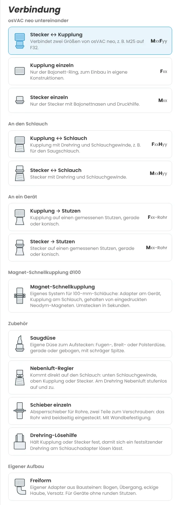
- osVAC neo untereinander: Stecker ↔ Kupplung verbindet zwei Größen. Kupplung einzeln und Stecker einzeln sind nur der Verschluss, z. B. zum Einbau in eigene Konstruktionen.
- An den Schlauch: Kupplung ↔ Schlauch und Stecker ↔ Schlauch – zum Aufdrehen auf den Saugschlauch.
- An ein Gerät: Kupplung → Stutzen und Stecker → Stutzen – für ein Gerät mit rundem Stutzen, den du selbst ausmisst.
- Magnet-Schnellkupplung Ø100: Adapter und Kupplung für 100-mm-Schläuche, die mit eingedruckten Magneten zusammenhalten. Ein eigenes System, es passt nicht zu den Teilen von osVAC neo.
- Zubehör: Saugdüse, Nebenluft-Regler, Schieber einzeln und Drehring-Lösehilfe.
- Eigener Aufbau: Freiform – ein Adapter aus Bausteinen, z. B. für eckige Auslässe, Bögen, Abzweige oder Geräte mit ungewöhnlicher Form.
Rechts neben jeder Art steht das Kürzel, unter dem die Datei später heißt (z. B. MxxFyy; xx und yy sind die Durchmesser).
Stecker ↔ Kupplung
Der einfachste Adapter: Er verbindet zwei Teile von osVAC neo, z. B. einen Schlauch mit Kupplung 36 und ein Gerät mit Stecker 32.
Größen

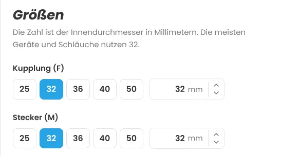
Wähle für die Kupplung (F) und den Stecker (M) je einen Durchmesser. Die Knöpfe 25 bis 50 sind die üblichen Größen. Andere Werte tippst du rechts in das Feld ein (von 15 bis 60 mm, auch mit Komma, z. B. 34,5).
Bei Kupplung einzeln und Stecker einzeln gibt es nur das eine Feld.
Passung

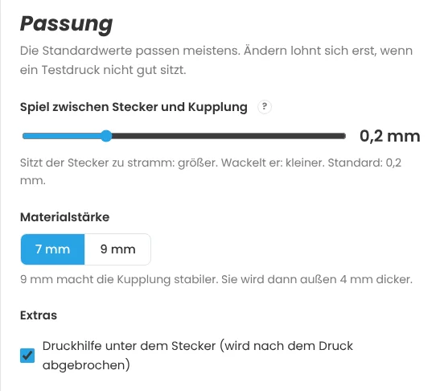
Spiel zwischen Stecker und Kupplung: Standard sind 0,2 mm. Sitzt der Stecker nach dem Druck zu stramm, stell mehr Spiel ein. Wackelt er, weniger. Das Fragezeichen neben dem Namen blendet eine kurze Erklärung ein.
Wie es danach weitergeht, steht unter Download.
Schlauchadapter
Kupplung ↔ Schlauch (FxxHyy) und Stecker ↔ Schlauch (MxxHyy) werden auf den Saugschlauch gedreht. Der Schlauchteil sitzt in einem Drehring: Er dreht sich frei, damit sich der Schlauch beim Arbeiten nicht verdrillt.

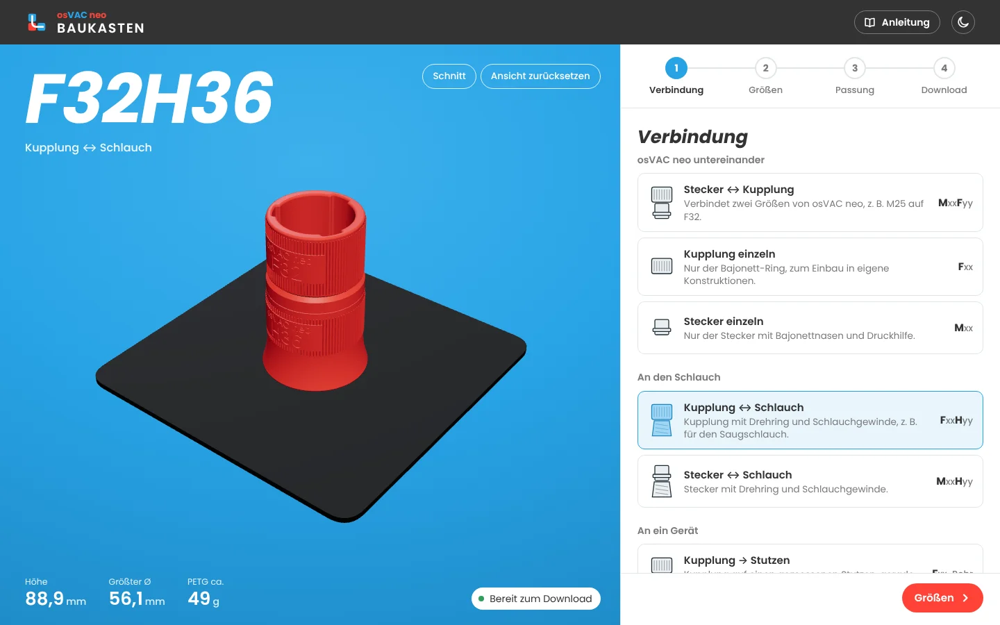
Größen

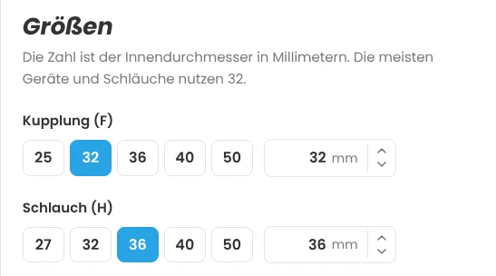
- Kupplung (F) bzw. Stecker (M): die Seite für osVAC neo.
- Schlauch (H): der Innendurchmesser des Schlauchs. Miss ihn innen oder schau in die Angaben deines Saugers. Viele Schläuche haben 32 oder 36 mm.
Passung

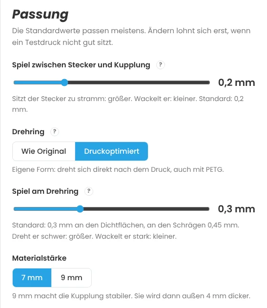
- Spiel zwischen Stecker und Kupplung: wie bei Stecker ↔ Kupplung.
- Drehring: Wie Original hat die Form von osVAC neo. Druckoptimiert ist eine eigene Form (in Entwicklung): Alle Flächen, die beim Druck nach unten zeigen, sind mindestens 45° steil, und nichts hängt flach über einem Spalt. Frei in der Luft beginnt nur die schmale Spitze eines Rings, 0,65 mm über dem anderen. So soll sich der Ring direkt nach dem Druck drehen. Der Ring an der Kupplung bzw. am Gehäuse sitzt dabei innen, der Ring am Schlauchteil liegt außen als Hülse darüber. Der Schlauchadapter mit Kupplung wird 0,5 mm länger. Ein Testdruck steht noch aus.
- Spiel am Drehring: Der Ring wird gleich mitgedruckt. Ist das Spiel zu klein, klebt er fest. Standard sind 0,3 mm wie im Original. Beim druckoptimierten Drehring gilt der Wert für die beiden senkrechten Dichtflächen, an den Schrägen ist der Spalt 0,15 mm weiter, mindestens 0,45 mm (Spiel höchstens 0,5 mm). Sitzt der Ring nach dem Druck fest, hilft die Drehring-Lösehilfe.
- Materialstärke: 9 mm statt 7 mm macht die Kupplung stabiler, sie wird dann außen 4 mm dicker.
Adapter auf einen Stutzen
Kupplung → Stutzen und Stecker → Stutzen verbinden osVAC neo mit einem Gerät, das einen runden Absaugstutzen hat. Du misst den Stutzen mit einem Messschieber aus, die App baut den passenden Adapter.

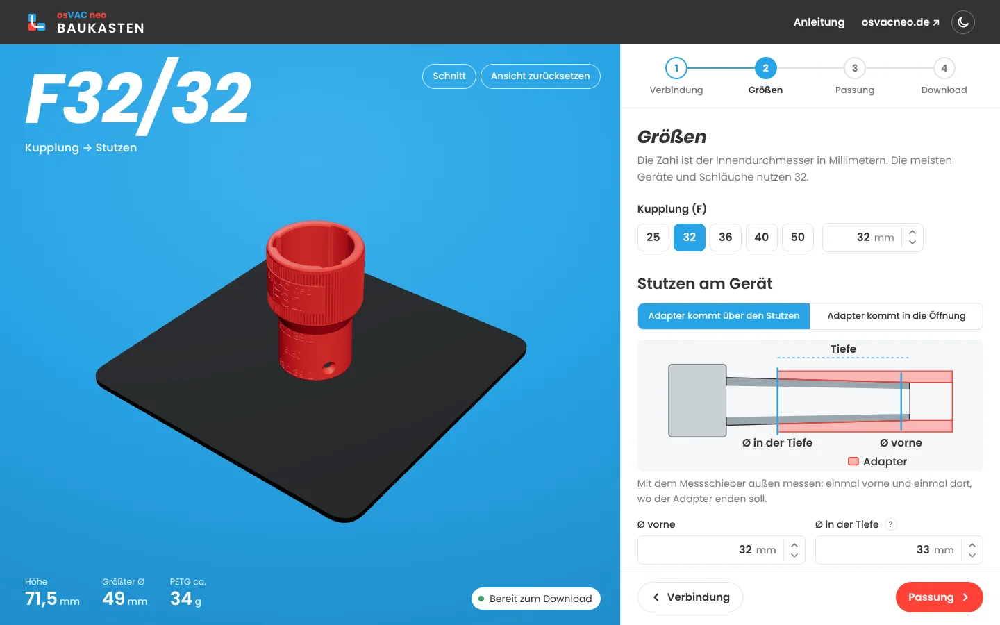
Größen und Stutzen messen

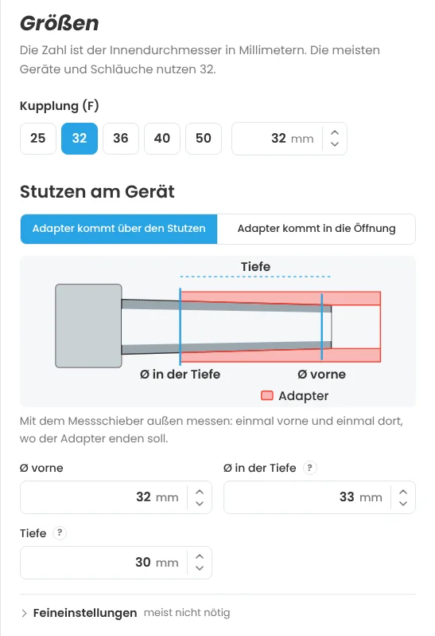
- Wähle oben die Größe der Kupplung bzw. des Steckers.
- Wähle, wie der Adapter am Gerät sitzt:
- Adapter kommt über den Stutzen: Der Adapter wird außen über den Stutzen geschoben. Miss den Stutzen außen.
- Adapter kommt in die Öffnung: Der Adapter wird in eine Öffnung gesteckt. Miss die Öffnung innen.
- Trage die Maße ein. Die Zeichnung zeigt, wo gemessen wird:
- Ø vorne: Durchmesser an der vorderen Kante.
- Ø in der Tiefe: Durchmesser dort, wo der Adapter enden soll. Viele Stutzen sind leicht kegelförmig. Ist er überall gleich dick, trägst du zweimal denselben Wert ein.
- Tiefe: wie weit der Adapter über den Stutzen geht bzw. in die Öffnung reicht. 20 bis 30 mm halten gut.
Passt etwas nicht zusammen (z. B. der Stutzen ist kleiner als der Anschluss), erscheint ein gelber Hinweis mit Knöpfen, die das Problem mit einem Klick beheben.
Feineinstellungen
Unter Feineinstellungen (meist nicht nötig) findest du:

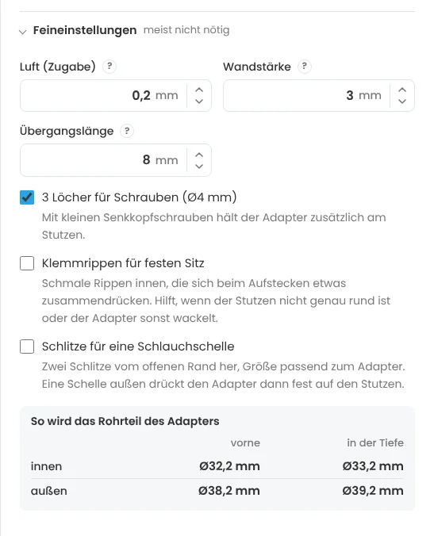
- Luft (Zugabe): etwas Spiel, damit der Adapter passt. Geht er nicht drauf bzw. hinein: Wert erhöhen. Sitzt er zu locker: verringern, bis 0.
- Wandstärke: Dicke der Wand am Rohrteil. 3 mm sind stabil.
- Übergangslänge: Länge des schrägen Stücks zwischen Anschluss und Rohrteil. Länger ist flacher und lässt sich besser drucken.
- 3 Löcher für Schrauben: Mit kleinen Senkkopfschrauben (Ø 4 mm) hält der Adapter zusätzlich am Stutzen.
- Klemmrippen: schmale Rippen, die sich beim Aufstecken etwas zusammendrücken. Hilft, wenn der Stutzen nicht genau rund ist.
- Schlitze für eine Schlauchschelle: Eine Schelle außen drückt den Adapter fest auf den Stutzen (nur bei „über den Stutzen“).
Die kleine Tabelle darunter zeigt, wie weit das Rohrteil am Ende innen und außen wird.
Magnet-Schnellkupplung Ø100
Für große Geräte mit 100-mm-Absaugung: Am Gerät sitzt ein Maschinenadapter, am Schlauch eine Schlauchkupplung. Beide halten über je acht Neodym-Magnete zusammen; ein Bund in der Mitte zentriert sie. Zum Umstecken ziehst du die Kupplung ab und setzt sie am nächsten Gerät an. Das ist ein eigenes System und passt nicht zu den Teilen von osVAC neo.

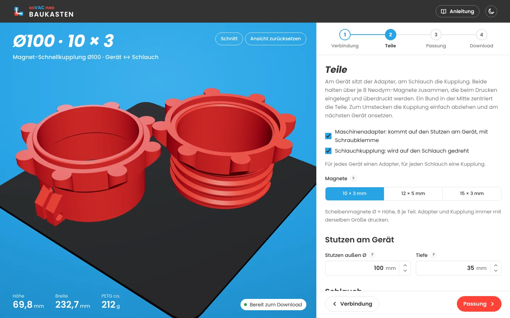

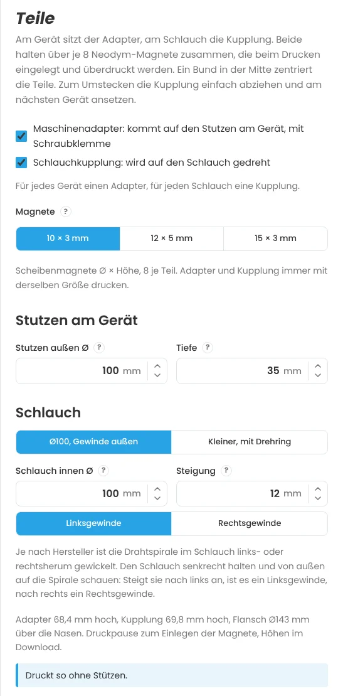
- Teile: Maschinenadapter, Schlauchkupplung oder beides. Für jedes Gerät brauchst du einen Adapter, für jeden Schlauch eine Kupplung. Beide zusammen brauchen ein Druckbett von etwa 240 mm; ist deins kleiner, druckst du sie nacheinander.
- Magnete: Scheibenmagnete 10 × 3, 12 × 5 oder 15 × 3 mm (Ø × Höhe). Größere halten fester. Adapter und Kupplung immer mit derselben Größe drucken.
- Stutzen außen Ø und Tiefe: Außendurchmesser des Stutzens am Gerät und wie weit er im Adapter steckt, bis zum Anschlag innen.
- Schlauch innen Ø, Steigung und Links- oder Rechtsgewinde: passend zur Drahtspirale deines Schlauchs. Die Steigung misst du am besten über fünf Windungen und teilst durch fünf.
In Passung stellst du das Spiel am Stutzen und am Zentrierbund ein.
Der Adapter wird mit einer Schraubklemme festgezogen: eine Zylinderschraube M5 × 25 (ISO 4762) und eine selbstsichernde Mutter M5 (DIN 985). Die Mutter sitzt verdrehsicher in einer Sechskant-Tasche.
Magnete eindrucken
Die Magnete liegen in geschlossenen Taschen unter der Kontaktfläche. Beim Drucken hältst du an der richtigen Schicht an, legst die Magnete ein und druckst weiter; drei Schichten darüber schließen die Taschen.
- Im Slicer an der Höhe, die im Download unter Druckhinweise steht, eine Pause einfügen (Bambu Studio: Schieber der Schichtvorschau auf diese Höhe, Rechtsklick auf das Plus, Pause hinzufügen). Mit 0,2 mm Schichthöhe drucken.
- In der Pause die Magnete bis zum Boden in die Taschen drücken. Nichts darf überstehen.
- Polung: Alle Magnete eines Teils gleich herum einlegen, beim Adapter mit der einen Seite nach oben, bei der Kupplung mit der anderen. Dann ziehen sich alle Kupplungen und Adapter an.
- Weiterdrucken.
Saugdüse
Eine eigene Düse zum Aufstecken auf den Schlauch. Die Düse wird stehend gedruckt, mit dem Anschluss unten und der Spitze oben.

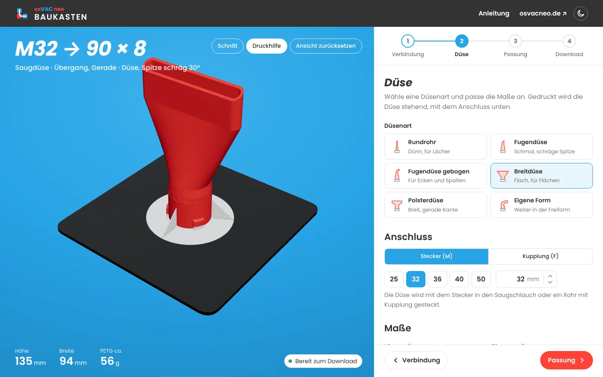

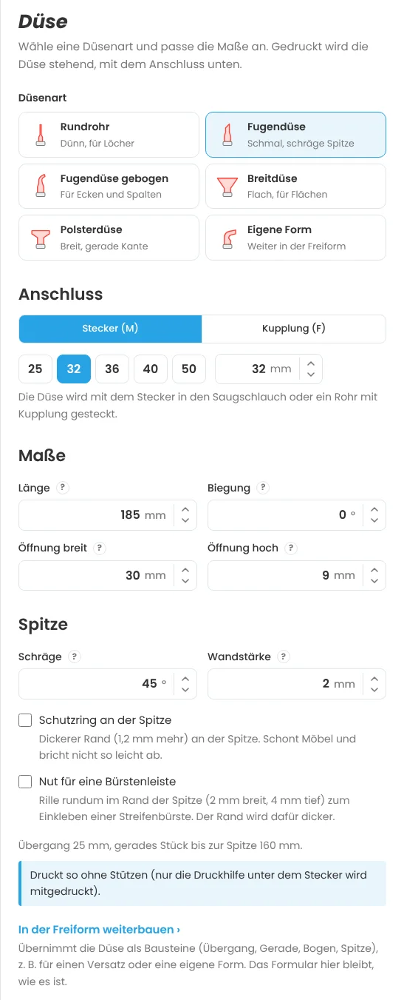
Düsenart
- Rundrohr: dünnes Rohr, z. B. für Bohrlöcher.
- Fugendüse: schmal mit schräger Spitze, für Ritzen.
- Fugendüse gebogen: wie die Fugendüse, aber gebogen, für Ecken und Spalten.
- Breitdüse: flach und breit, für Flächen.
- Polsterdüse: breit mit gerader Kante.
- Eigene Form: übernimmt die Düse in die Freiform, wo du sie aus Bausteinen weiterbauen kannst. Liegt dort schon ein eigener Aufbau, fragt die App vorher nach.
Anschluss
Ob die Düse mit einem Stecker (M) oder einer Kupplung (F) angeschlossen wird, und in welcher Größe. Meist ist es ein Stecker, der in den Saugschlauch gesteckt wird.
Maße
- Länge: Gesamtlänge der Düse.
- Biegung: Winkel, um den die Düse gebogen ist (0° = gerade).
- Öffnung breit und Öffnung hoch: Größe der Öffnung an der Spitze.
Spitze
- Schräge: Winkel, mit dem die Spitze schräg abgeschnitten ist.
- Wandstärke: 2 mm sind stabil.
- Schutzring an der Spitze: ein dickerer Rand, der Möbel schont und nicht so leicht abbricht.
- Nut für eine Bürstenleiste: eine Rille rundum zum Einkleben einer Streifenbürste.
Unter den Einstellungen steht, ob die Düse ohne Stützen druckbar ist.
Nebenluft-Regler
Der Nebenluft-Regler kommt direkt auf den Schlauch. Oben steckst du die Düse oder das Werkzeug an. Mit dem oberen Drehring regelst du, wie viel Luft seitlich mit angesaugt wird: Das nimmt Sog von der Düse, z. B. für Vorhänge, Polster oder lose Teile.

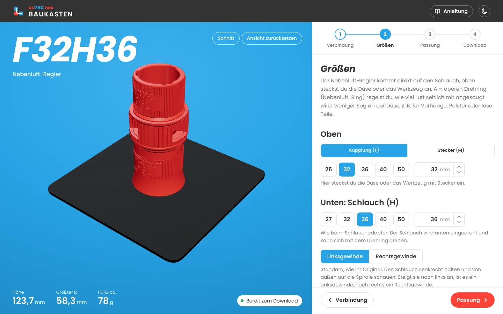

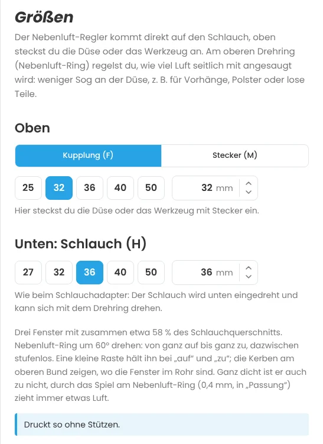
- Oben: Kupplung (F, Standard) oder Stecker (M) und die Größe.
- Unten: Schlauch (H): wie beim Schlauchadapter. Der Schlauch wird eingedreht und kann sich mit dem unteren Drehring drehen.
- Bedienung: Den Nebenluft-Ring um 60° drehen: von ganz auf bis ganz zu, dazwischen stufenlos. Kerben am oberen Bund zeigen, wo die Fenster sind.
In Passung stellst du das Spiel am Nebenluft-Ring ein (Standard 0,35 mm) und das Spiel am Drehring für den Schlauch (Standard 0,3 mm; auch hier gibt es den druckoptimierten Drehring). Das Spiel am Nebenluft-Ring gilt für die Innenfläche, an den schrägen Flanken oben und unten ist der Spalt 0,15 mm weiter (mindestens 0,45 mm). Der Ring beginnt beim Druck gut 1 mm über dem unteren Bund und hängt sonst nirgends flach über einem Spalt. Dreht ein Ring nach dem Druck zu schwer, mehr Spiel einstellen.
Schieber
Ein Absperrschieber für Rohre: Mit einer Platte machst du die Leitung auf oder zu. Er besteht aus zwei Gehäuseteilen und der Platte und wird verschraubt (Muttern und Schrauben M3).

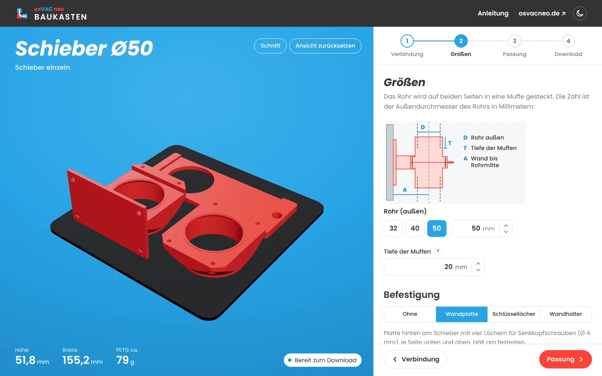

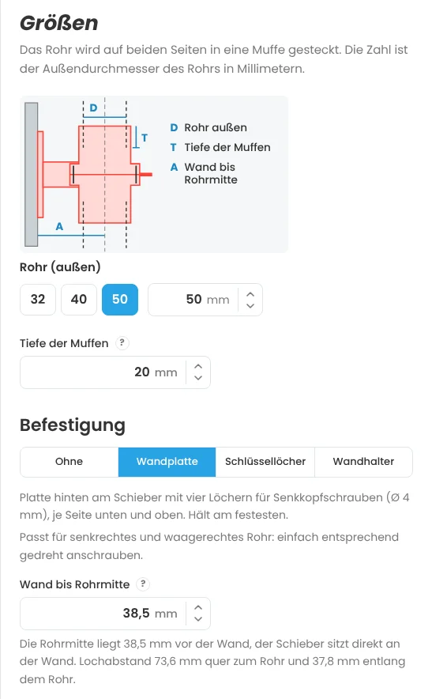
- Rohr (außen): Außendurchmesser des Rohrs, das auf beiden Seiten eingesteckt wird.
- Tiefe der Muffen: wie weit das Rohr auf jeder Seite im Schieber steckt. 20 mm halten gut.
- Befestigung: Ohne (hängt nur am Rohr), Wandplatte (vier Schraublöcher, hält am festesten), Schlüssellöcher (zum Einhängen auf zwei Schrauben) oder Wandhalter (eigenes Teil für das Rohr daneben).
- Wand bis Rohrmitte: Abstand von der Wand bis zur Mitte des Rohrs, z. B. um über eine Fußleiste zu kommen.
Die Anleitung zum Zusammenbauen steht im Schritt Download unter Druckhinweise.
Drehring-Lösehilfe
Sitzt der Drehring eines Schlauchadapters nach dem Druck fest, hilft dieses Werkzeug: Es hält die Kupplung bzw. den Stecker fest, damit du den Schlauchteil kräftig drehen kannst.

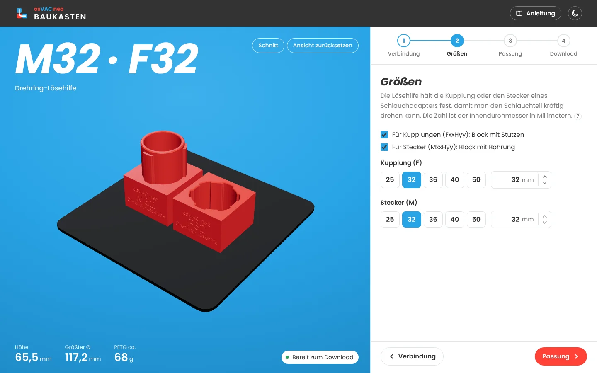

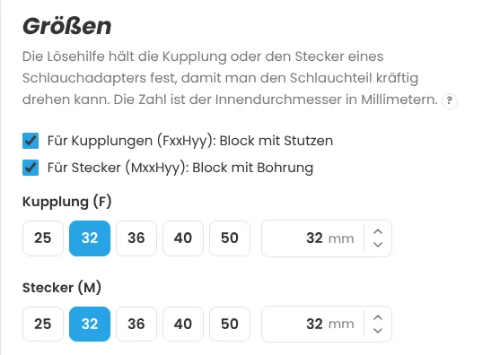
- Für Kupplungen (FxxHyy): Block mit Stutzen, auf den die Kupplung gesteckt wird.
- Für Stecker (MxxHyy): Block mit Bohrung, in die der Stecker gesteckt wird.
- Darunter wählst du die Größen. Die Blöcke sind beschriftet wie im Original: Der Halter für Kupplungen ist selbst ein Stecker und trägt „M“, der für Stecker trägt „F“.
So geht's: Adapter aufstecken, den Block festhalten (z. B. im Schraubstock) und den Schlauchteil drehen, bis der Ring frei läuft.
Freiform
Mit der Freiform baust du Adapter, die es so nicht fertig gibt: eckige Hauben, Bögen, versetzte Anschlüsse, Abzweige, Flansche zum Anschrauben oder einen Anschluss in der genauen Form deines Geräts. Der Adapter wird aus Bausteinen zusammengesetzt, vom Anschluss A bis zum Ende B.

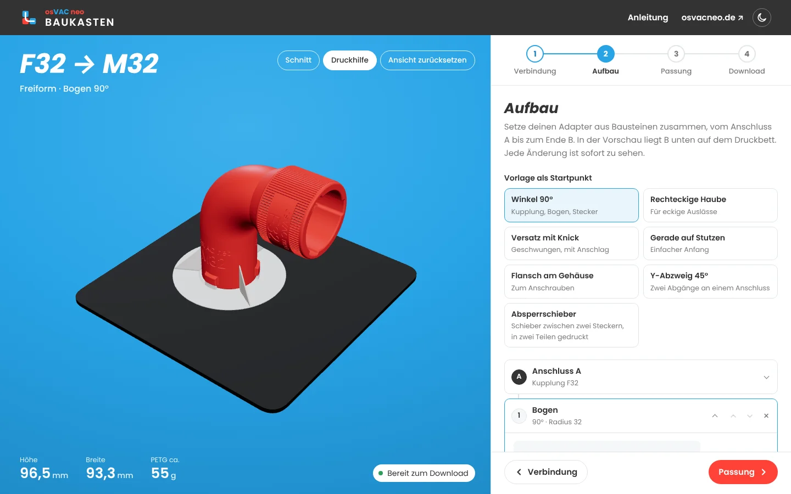
Vorlagen

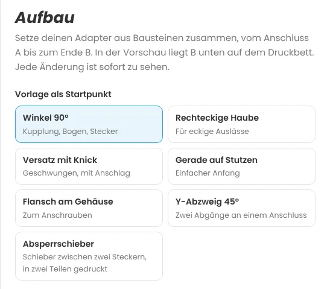
Am einfachsten startest du mit einer Vorlage und passt sie an:
- Winkel 90°: Kupplung, Bogen, Stecker.
- Rechteckige Haube: für eckige Auslässe.
- Versatz mit Knick: geschwungen, mit Anschlag.
- Gerade auf Stutzen: einfacher Anfang für ein Gerät.
- Flansch am Gehäuse: zum Anschrauben an eine Gerätewand.
- Y-Abzweig 45°: zwei Abgänge an einem Anschluss.
- Absperrschieber: Schieber zwischen zwei Steckern, in zwei Teilen gedruckt.
Hast du schon etwas geändert, fragt die App, bevor eine Vorlage deinen Aufbau ersetzt.
Der Aufbau als Kette

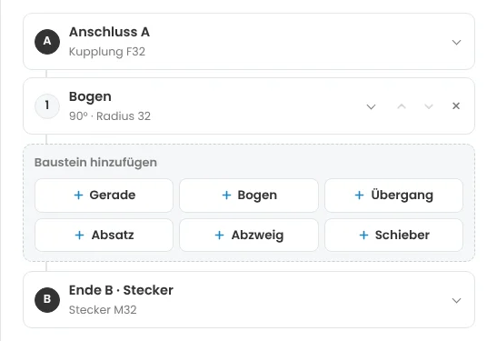
Unter den Vorlagen steht dein Adapter als Kette von Karten. Ein Klick auf eine Karte klappt sie auf:
- A – Anschluss A: der Anschluss von osVAC neo, Kupplung (F) oder Stecker (M) mit Größe.
- 1, 2, 3 … – Bausteine: die Formstücke dazwischen. Mit den Pfeilen verschiebst du einen Baustein näher zu A oder B, mit × entfernst du ihn.
- B – Ende B: das andere Ende, entweder wieder ein Anschluss von osVAC neo oder das Gerät.
- Baustein hinzufügen: Knöpfe für neue Bausteine.
Ein Ausrufezeichen an einer Karte zeigt einen Hinweis: rot heißt, so geht es nicht (der Download ist gesperrt), gelb ist eine Warnung, blau heißt, es fehlt noch eine Eingabe.
Die Bausteine

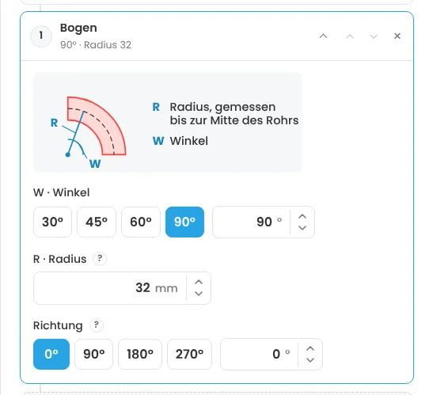
- Gerade: ein gerades Stück, macht den Adapter länger.
- Bogen: lenkt um, z. B. um 90°. Einstellbar sind Winkel, Radius und Richtung.
- Übergang: ändert die Form fließend, z. B. von rund auf eckig. Er kann dabei auch versetzen, knicken und drehen (Versetzen, knicken, drehen).
- Absatz: wechselt die Form auf kurzem Weg, z. B. als Anschlag.
- Abzweig: ein zweiter Abgang (Y oder T) mit eigenem Ende C. Einstellbar sind Winkel, Richtung und Durchmesser.
- Schieber: eine Platte zum Auf- und Zumachen. Mit Schieber wird der Adapter in zwei Teilen gedruckt und verschraubt.
Bausteine mit Formwechsel haben eine Form am Ende: Kreis, Ellipse, Langloch, Rechteck, D-Form, Trapez, Dreieck oder Eigene (eigene Kontur). Die Skizze neben den Feldern zeigt, welches Maß was ist.
Unter Wandstärke (unten im Aufbau) stellst du die Wanddicke aller Bausteine ein; der Standard passt meistens.
Ende B am Gerät

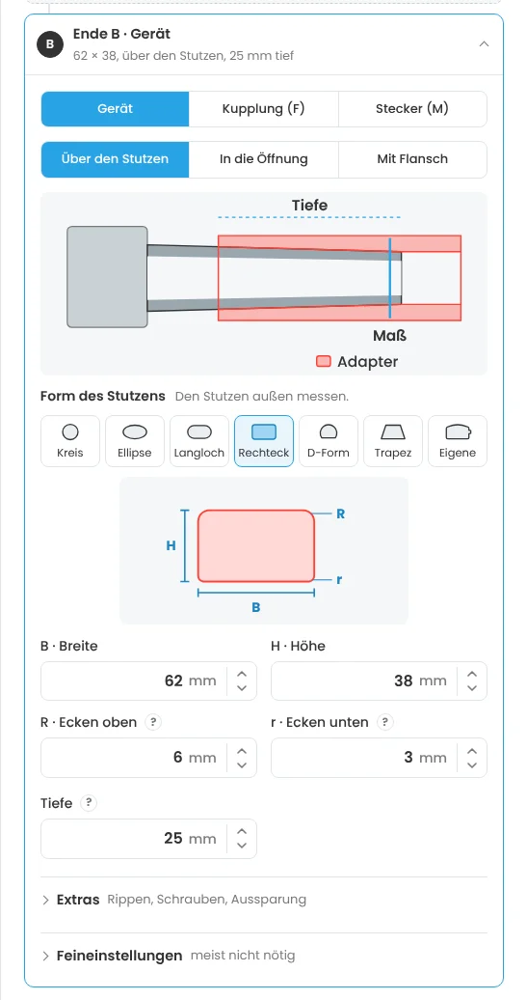
Ist Ende B ein Gerät, wählst du, wie der Adapter dort sitzt:
- Über den Stutzen: der Adapter geht außen über den Anschluss des Geräts.
- In die Öffnung: der Adapter steckt in einer Öffnung.
- Mit Flansch: der Adapter wird an die Gerätewand geschraubt.
Darunter wählst du die Form des Stutzens bzw. der Öffnung (Kreis, Ellipse, Langloch, Rechteck, D-Form, Trapez oder Eigene) und trägst die Maße ein. Die Skizze zeigt, welcher Buchstabe welches Maß ist, z. B. B = Breite, H = Höhe, R und r = Eckradien oben und unten. Tiefe ist, wie weit der Adapter über den Stutzen geht.
- Extras: Klemmrippen, Löcher für Schrauben und eine Aussparung (z. B. für einen Hebel oder ein Kabel am Gerät).
- Feineinstellungen: Luft (Zugabe) und Übergang, meist nicht nötig.

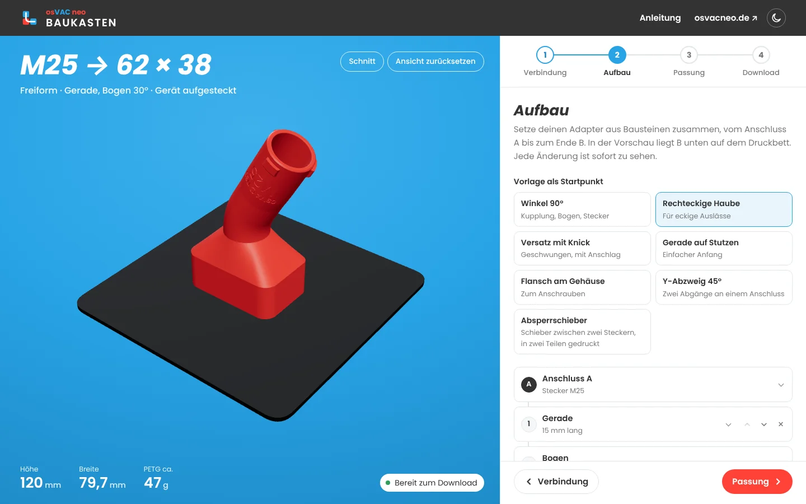
Flansch zum Anschrauben

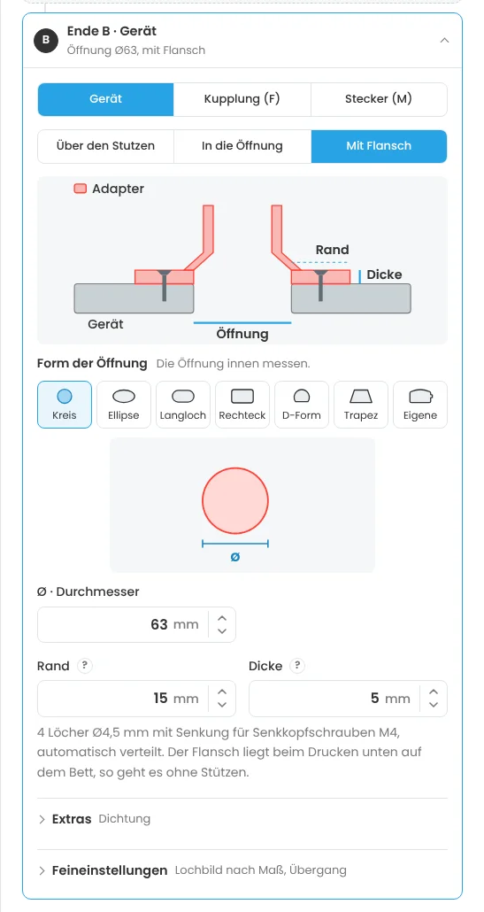
Mit Flansch wird der Adapter mit einer Platte an das Gehäuse geschraubt. Du misst die Öffnung im Gerät innen und stellst Rand (wie weit die Platte über die Öffnung hinausgeht) und Dicke der Platte ein. Die Löcher für Senkkopfschrauben M4 verteilt die App automatisch. Der Flansch liegt beim Drucken unten auf dem Bett, so geht es ohne Stützen.
- Extras: eine Nut für ein Dichtband, damit der Flansch dicht anliegt.
- Feineinstellungen: ein eigenes Lochbild nach Maß (z. B. passend zu vorhandenen Löchern im Gerät) und die Länge des Übergangs.

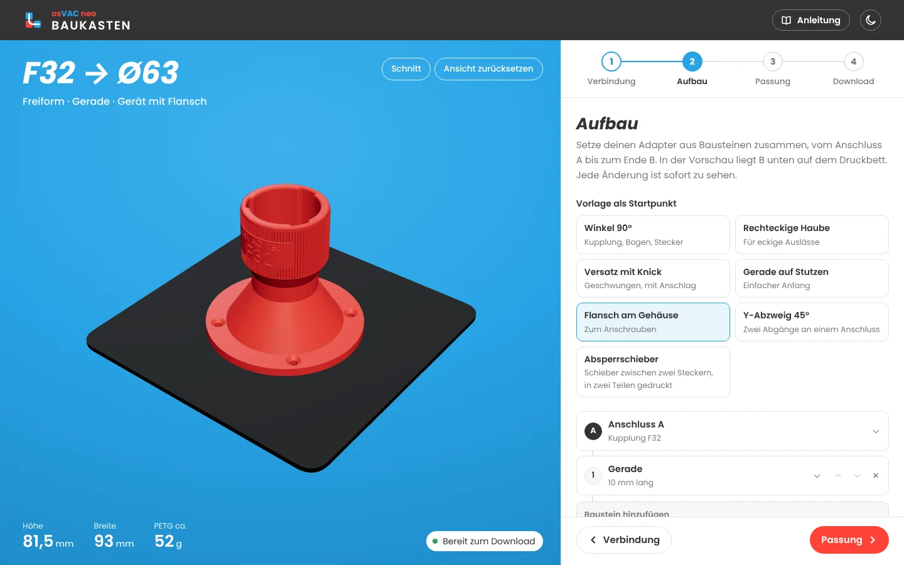
Abzweig und Schieber

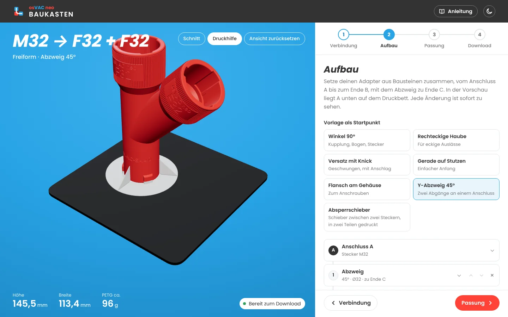
Mit einem Abzweig bekommt der Adapter ein drittes Ende C, z. B. um zwei Geräte an einen Schlauch zu hängen.

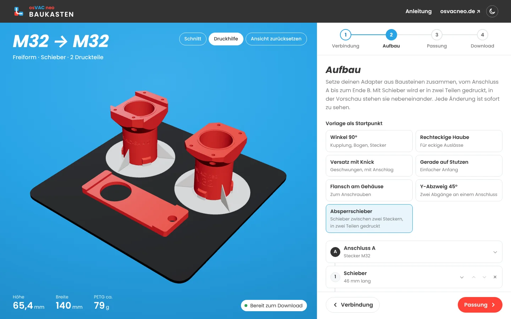
Mit einem Schieber wird der Adapter geteilt und in zwei Teilen gedruckt. Das Spiel der Platte stellst du in Passung ein.
Was liegt beim Drucken unten?
Unten im Aufbau wählst du, welches Ende auf dem Druckbett steht. Die Vorschau zeigt das Teil genau so, wie es gedruckt wird. Am besten steht das Ende unten, das flach ist und eine große Fläche hat.
Hinweise und Vorschläge

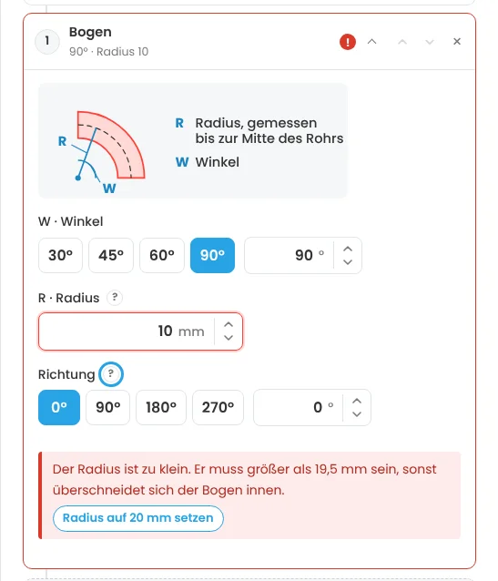
Die App prüft den Aufbau laufend. Ist etwas nicht druckbar oder passt nicht zusammen, erscheint an der Karte ein Hinweis. Im Bild ist der Radius des Bogens zu klein. Oft gibt es Knöpfe, die das Problem mit einem Klick lösen, hier Radius auf 20 mm setzen.
Eigene Kontur
Hat dein Gerät einen Auslass mit ungewöhnlicher Form, wählst du in der Freiform bei der Form Eigene. Dann gibt es drei Wege zur Kontur:

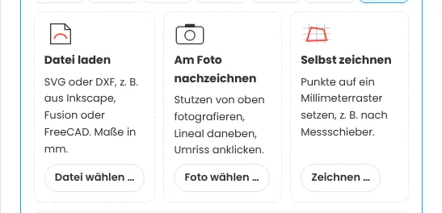
- Datei laden: eine SVG- oder DXF-Datei, z. B. aus Inkscape, Fusion oder FreeCAD. Maße in mm.
- Am Foto nachzeichnen: ein Foto des Auslasses mit einem Lineal daneben.
- Selbst zeichnen: Punkte auf ein Millimeterraster setzen, z. B. nach Messschieber.
Solange noch keine Kontur da ist, zeigt die App einen blauen Hinweis und rechnet noch nicht.
Am Foto nachzeichnen
- Foto wählen. Fotografiere den Auslass möglichst genau senkrecht von oben und mit etwas Abstand (Zoom), mit einem Lineal in derselben Ebene daneben. Schräg fotografiert wird die Kontur verzerrt.
- Maßstab setzen. Klicke auf zwei Marken des Lineals (z. B. 0 und 5 cm) und trage ein, wie weit sie auseinander liegen (hier 50 mm). Die Punkte lassen sich danach noch verschieben.
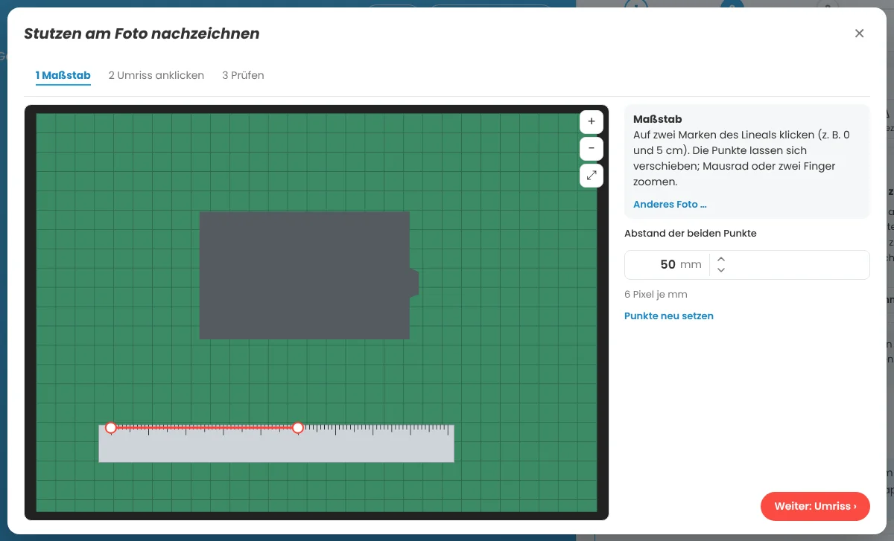
Maßstab am Lineal setzen - Umriss anklicken. Klicke rund um den Auslass auf jede Ecke. Die gestrichelte Linie zeigt, wie sich der Umriss schließt. Rechts siehst du die Lage des gewählten Punkts und kannst einer Ecke einen Radius geben (Ecke runden R).
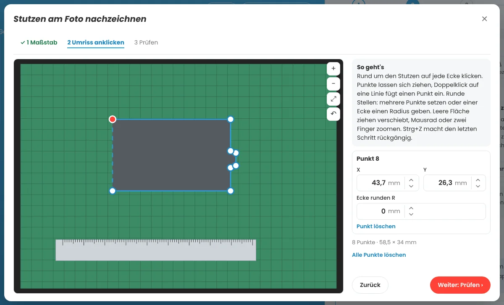
Umriss nachzeichnen - Prüfen. Die App zeigt die gemessene Größe. Miss zur Sicherheit mit dem Messschieber nach: Unter Breite laut Messschieber trägst du das echte Maß ein, dann wird die Kontur passend vergrößert oder verkleinert. Stimmt alles, klicke auf Übernehmen.
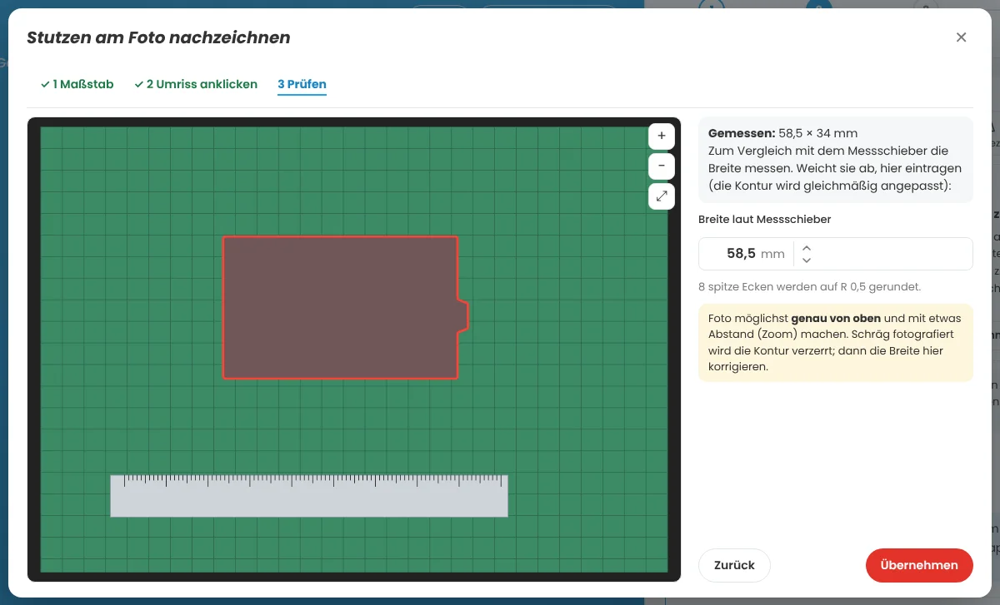
Kontur prüfen und übernehmen


Selbst zeichnen und bearbeiten

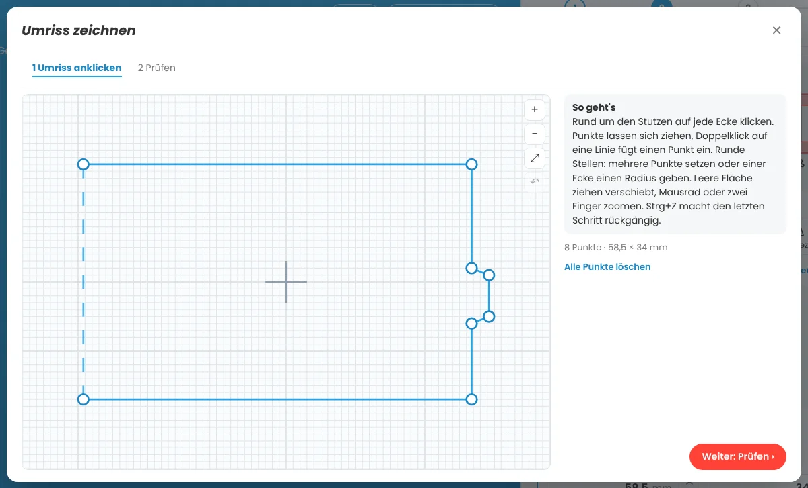
Beim Selbstzeichnen klickst du die Ecken auf ein Millimeterraster, z. B. nach Maßen vom Messschieber. So geht's, hier wie beim Foto:
- Punkt setzen: auf die Fläche klicken.
- Punkt verschieben: ziehen, oder rechts X und Y genau eintragen.
- Punkt einfügen: Doppelklick auf eine Linie.
- Runde Stellen: mehrere Punkte setzen oder einer Ecke einen Radius geben (Ecke runden R).
- Punkt löschen bzw. Alle Punkte löschen: rechts unter dem Punkt.
- Ansicht: leere Fläche ziehen verschiebt, Mausrad oder zwei Finger zoomen, die Knöpfe + und − ebenso.
- Rückgängig: der Pfeil oder Strg+Z.
Mit Bearbeiten öffnest du eine fertige Kontur wieder.
Nach dem Übernehmen

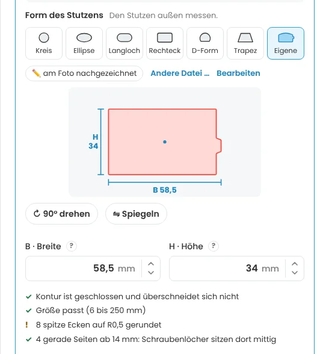
Die Kontur erscheint als Skizze mit Maßen. Darüber steht, woher sie kommt, mit Andere Datei … bzw. Bearbeiten.
- 90° drehen und Spiegeln richten sie aus. Die Kontur gilt mit Blick von außen auf den Stutzen; ist die Zeichnung von der anderen Seite gesehen, hilft Spiegeln.
- B · Breite und H · Höhe: Weicht das Maß vom Messschieber ab (z. B. Datei in Zoll oder Foto ungenau), hier das echte Maß eintragen. Die Kontur wird gleichmäßig vergrößert oder verkleinert.
- Die Prüfliste darunter zeigt, ob die Kontur geschlossen ist, ob die Größe passt und was die App angepasst hat (z. B. spitze Ecken leicht gerundet).

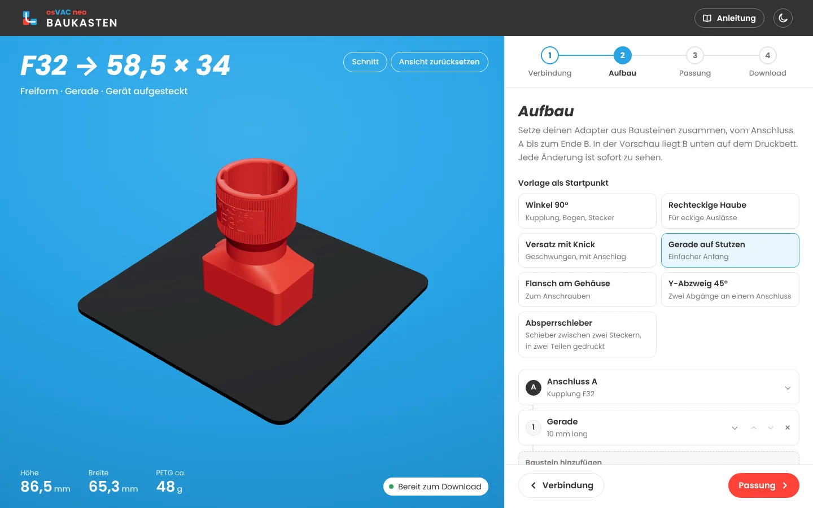
Schritt Passung
In Passung stellst du ein, wie stramm die Teile sitzen. Welche Regler es gibt, hängt vom Adapter ab:
- Spiel zwischen Stecker und Kupplung – bei allen Anschlüssen von osVAC neo, Standard 0,2 mm.
- Spiel am Drehring – bei Schlauchadaptern.
- Materialstärke – 7 oder 9 mm bei der Kupplung.
- Spiel am Nebenluft-Ring – beim Nebenluft-Regler.
- Spiel am Rohr und Spiel der Platte – beim Schieber.
- Extras: Druckhilfe unter dem Stecker – der Stecker steht beim Drucken auf einer kleinen Hilfe, die danach abgebrochen wird (empfohlen).
Die Standardwerte passen meistens. Ändern lohnt sich erst, wenn ein Testdruck nicht gut sitzt. Auf Standard zurücksetzen stellt die Werte wieder her.
Download

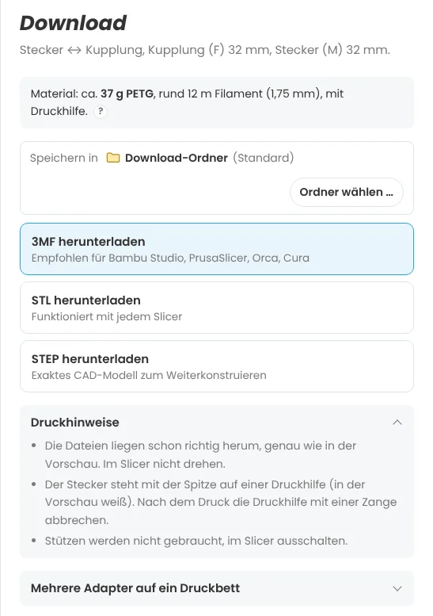
- Material: wie viel Filament der Druck ungefähr braucht. Gerechnet wird wie im Slicer mit 0,2 mm Schichthöhe, 3 Wänden und 15 % Füllung.
- Speichern in: der Ordner für die Dateien. Mit Ordner wählen … nimmst du einen anderen.
- 3MF: empfohlen für Bambu Studio, PrusaSlicer, Orca und Cura. Die Teile liegen schon richtig auf dem Druckbett.
- STL: funktioniert mit jedem Slicer.
- STEP: das exakte CAD-Modell, zum Weiterkonstruieren.
- Druckhinweise: was du beim Drucken und Zusammenbauen beachten musst. Lies sie vor dem ersten Druck.
Mehrere Adapter auf ein Druckbett

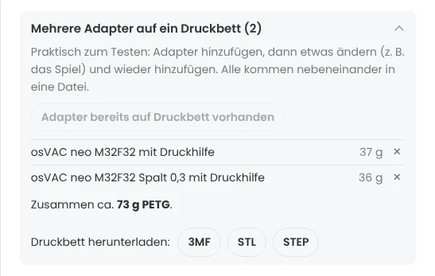
Praktisch zum Testen: Klicke auf Aktuellen Adapter hinzufügen, ändere etwas (z. B. das Spiel) und füge ihn noch einmal hinzu. Alle Adapter kommen nebeneinander in eine Datei. Die Liste zeigt das Filament je Adapter und zusammen.
- Material: PETG ist ideal. Es ist zäh und hält Wärme besser aus als PLA.
- Schichthöhe: 0,2 mm. Beim Schieber ist das wichtig, weil die Dichtlippen genau darauf ausgelegt sind.
- Nicht drehen: Die Dateien liegen schon richtig herum, genau wie in der Vorschau.
- Stützen: Die Druckhinweise sagen dir, ob Stützen nötig sind. Wenn ja: im Slicer „Stützen nur auf dem Druckbett“ einschalten.
- Druckhilfe: nach dem Druck mit einer Zange abbrechen.
- Wände: Für Düsen und stark belastete Teile mindestens 3 Wände.
Häufige Fragen
Der Stecker passt nicht oder wackelt.
In Passung das Spiel ändern: zu stramm → größer, wackelt → kleiner. Dann neu drucken. Mit dem Druckbett kannst du mehrere Werte auf einmal ausprobieren.
Der Drehring dreht sich nicht.
Kräftig drehen, z. B. mit der Drehring-Lösehilfe. Beim nächsten Druck in Passung das Spiel am Drehring erhöhen (für PETG 0,35 bis 0,5 mm).
Der Download ist gesperrt.
Irgendwo ist ein roter Hinweis. Die Karte mit dem roten Ausrufezeichen öffnen und den Hinweis beheben, oft mit einem Klick auf den vorgeschlagenen Knopf. Bei einer eigenen Kontur fehlt vielleicht noch die Kontur (blauer Hinweis).
Die Vorschau ist blass.
Die App rechnet gerade neu oder es gibt einen Fehler. Unten in der Vorschau steht, was los ist.
Wo sind meine Dateien?
Im Ordner, der im Download unter Speichern in steht. Standard ist der Download-Ordner.
Wie fange ich neu an?
Im Schritt Verbindung ganz unten auf Neu anfangen klicken. Einzelne Bereiche setzt du mit … auf Standard zurücksetzen zurück.
Darstellung

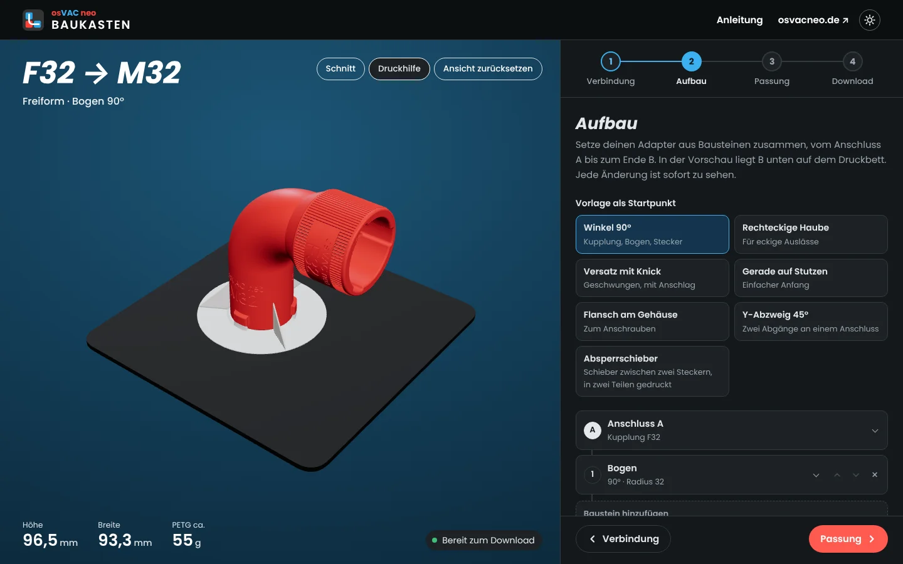
Mit dem runden Knopf ganz rechts in der Kopfzeile (Mond bzw. Sonne) wechselst du zwischen heller und dunkler Ansicht. Die App startet immer hell und merkt sich deine Wahl.